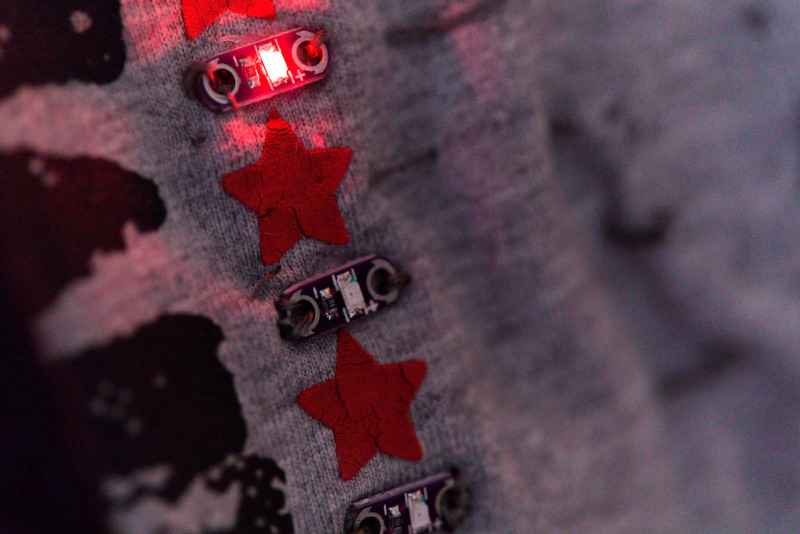

Unsere nächsten Workshops
Alle Workshops auch auf https://makerspace.experimenta.science

3D Konstruktion mit Fusion 360
07.09.2019 - 12:00 bis 16:00 Uhr
Wir wollen ein Modell für den 3D Drucker erstellen. Geplant ist eine Schraube mit M-Gewinde und einer
passenden Mutter. Danach wollen wir noch eine kleine Kiste zur Fertigung über den Lasercutter erstellen. Mit
etwas Gedult können beide Objekte am Abend mitgenommen werden.

Licht und seine Manipulation
14.09.2019 - 10:00 bis 16:00 Uhr
Wie verbaut man LEDs, wie funktioniert RGB-Farbmischung und was kann man damit alles anstellen, wenn man
Microcontroller und Schalter dazu gibt und das ganze mit einer Prise Experimentierfreude garniert? Wir
konzipieren, bauen und benutzen selbst konzipierte Photonenkanonen.

Future Fashion
16.10.2019 - 10:00 bis 16:00 Uhr
Wir verwandeln Kleidungsstücke mit bunten LEDs und ein bisschen Kreativität in leuchtende Unikate, dafür
kannst du gerne deine eigenen Klamotten, Taschen, Mützen oder Ähnliches mitbringen und upcyclen.